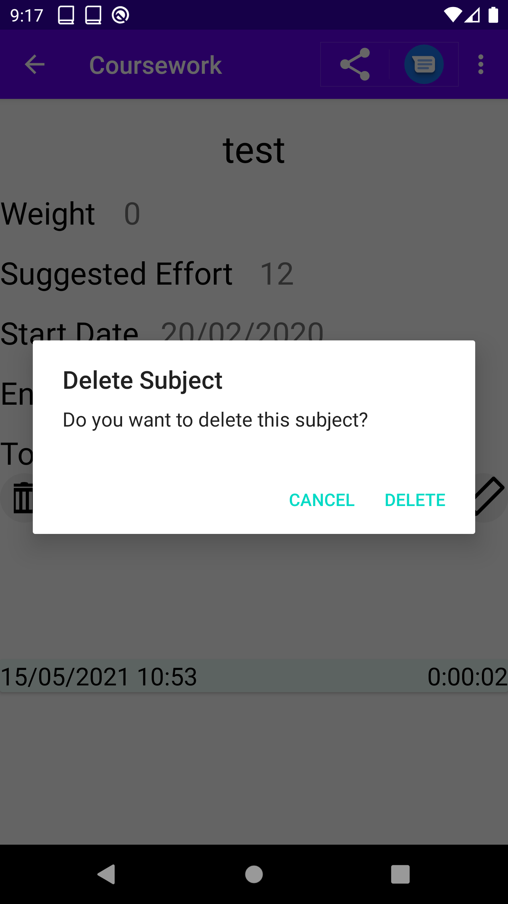

Subjects
The app allows for the recording of how much time
is spent studying per subject. To do that it keeps
information of each subject. This allows the user to
see how much progress has been made as well to receive notifications
if not enough progress has been made
It is important to note that this is a helping app.
It is able to store subject information of each subject.
This is done as it allows for better usability,
The system can store information for each subject
in the form of subject title, weight (importance),
effort (hours needed to be spent studying),
starting date as well as the ending date.
Adding a subject
The process of adding a new subject in the app is quite simple.
It requires the user to click on the Add a Subject option in the
bottom navbar. Then the user will be taken in the Add a Subject Page.
There they will input all the relevant information. And click the save button.
Add a Subject Page.
Warning
If you have opted to use the Backup feature in that device
the subject will not be saved until you have recorded your first session.
Modifying an existing subject
In some cases the wrong data will be inputted in the database when entering a new
subject or some of the subject specification changes.
In order to accommodate those changes you will need to go to the Subjects page,
click on the subject that you want to modify. Then on the subject page click the pencil button.
There you will go to a page where you can modify the subject information.
Once you have completed the modification of the information you can click on the save button
Modify Subject Page.
Deleting a Subject
Sometimes a subject in the subject list may need to be removed.
There are multiple ways to delete it.
1. Through the swipe to delete in the Subject Page
2. Through the Subject Overview Page
Subject Page
Swiping to the the right in the Subject page will delete the subject.
Just click delete in the dialog box that will come up
Confirm deletion through
the Subjects Page
Subject Overview Page
By clicking the bin button you will be prompted to click whether or not you would want to
delete the subject you are seeing. Just click delete in the dialog box that will come up
and the subject will be deleted.

Confirm deletion through
the Subject Overview Page